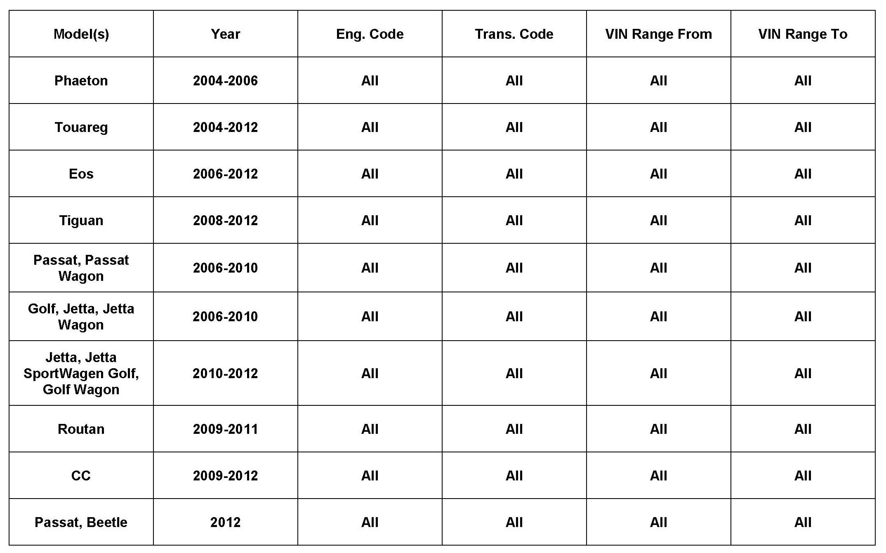
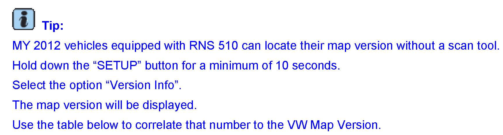
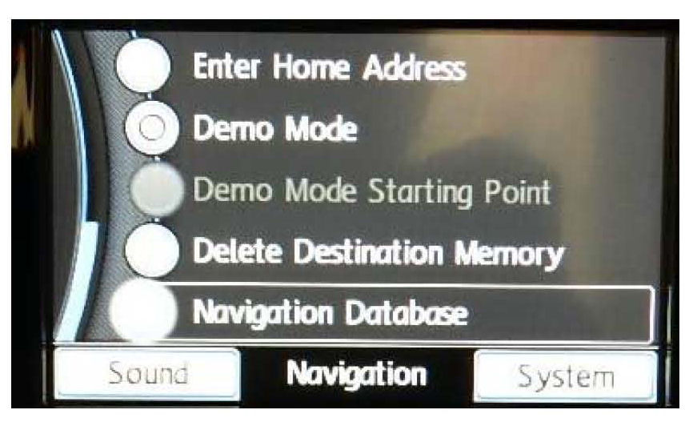
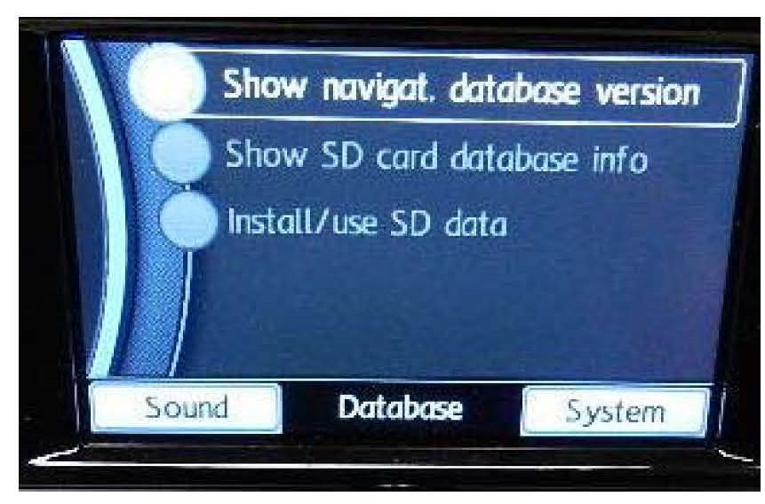
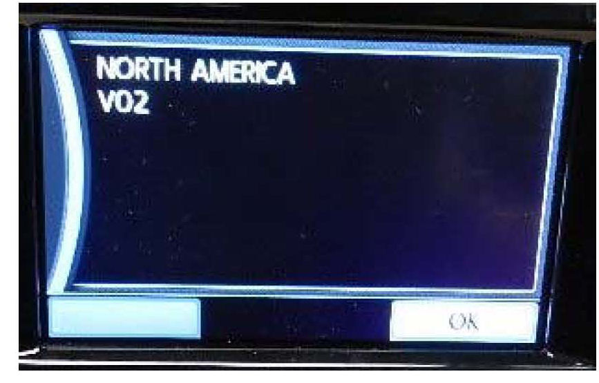
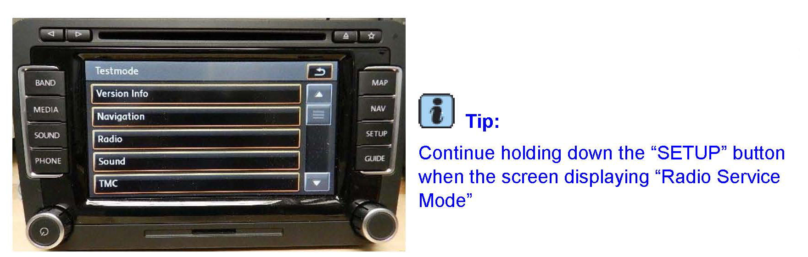
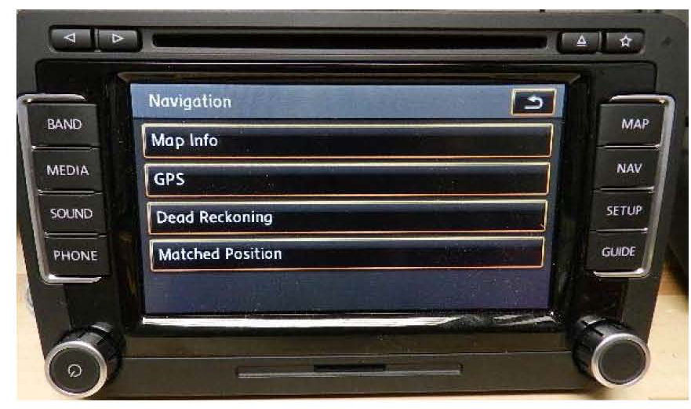
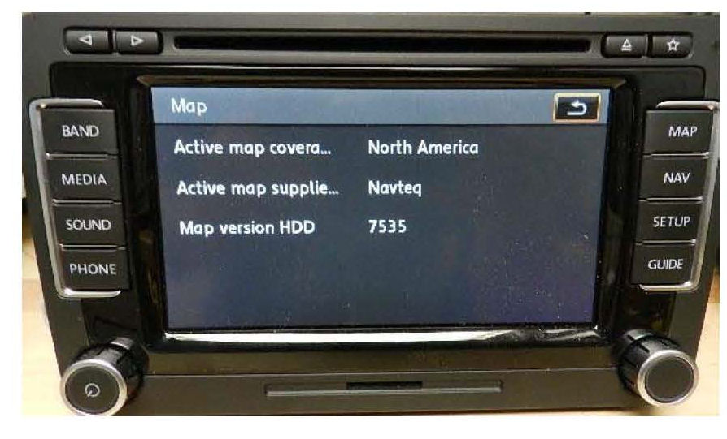
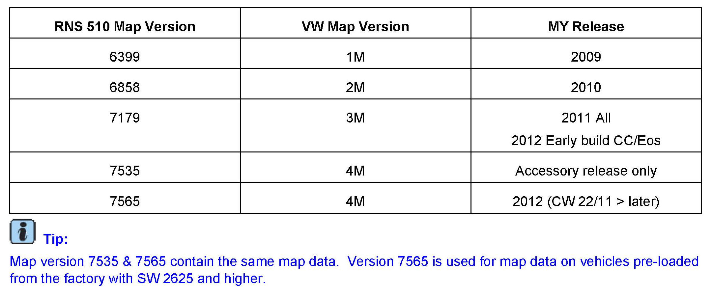
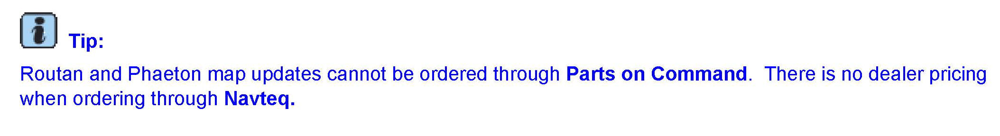

Navigation - Map Purchase And Update Information
91 12 05February 10, 2012
2025661 *Supersedes T.B. V911104 dated February 28, 2011 to include additional model and model year applicability.*

Vehicle Information
Condition
Map Information Overview
To provide an overview of the following:
^ Radios which have map data preloaded
^ Map update release and purchase information
^ Routan / Phaeton map data purchase information

Tip:
Production Solution
Not applicable.
Service
Map Data Preloading
The following navigations radios are preloaded with map data:
^ RNS 510 MY 2012 starting July 2011 production
^ RNS850
^ RNS315
^ Routan Navigation radios
Map Version Identification
RNS 315
^ Press the "NAV" button
^ Press the "SETUP" button

^ Scroll down until you see the option "Navigation Database"

^ Select the option Show Navigat. "Database version"

^ Reference the table to see which release of map data is installed in the unit
RNS 510 (MY 2011 & older)
^ Using a scan tool, enter address word 37 using Vehicle Self Diagnosis.
^ Select 012 - Adaption.
^ Enter the value "50" and select "Q".
^ Change the value from "0" to "1". Save the value, then exit out of VSD.
^ Press and release both track change buttons (upper left hand corner of the unit) and the day/night button (upper right hand corner of the unit) at the same time. This will allow the radio to reboot itself.

^ Press the SETUP" button for a minimum of 30 seconds. This will bring the radio to Testmode".
^ Select the option Navigation".

Select the option Map Info".

^ The map version will now be displayed. The 4 digit number can now be correlated with the map version in the below table.
^ Reverse the adaption channel procedure and change the value back to 0". Otherwise the radio will run slower.

RNS 510 Map Lookup Table
RNS 315
Map Data New Release Schedule
For navigation radios still in production, map updates are released in the third quarter, on a year basis. The following map updates are available through VWAccessories:
^ RNS 510: version 4M
^ MFD2 / RNS 2 DVD based navigation: version 7B
^ RNS2 10 disc CD based navigation: version 7B
^ RNS 315 Hard drive based navigation: version V02
^ RNS 850 Hard drive based navigation: No updates are available at this time
Routan and Phaeton Map Information
Routan and Phaeton map updates can be purchased directly from Navteq. They may be contacted by phoning 866-894-2627.

Tip:
Warranty
Information only.
Required Parts and Tools
Not applicable.
Additional Information
All part and service references provided in this Technical Bulletin are subject to change and/or removal. Always check with your Parts Dept. and Repair Manuals for the latest information.